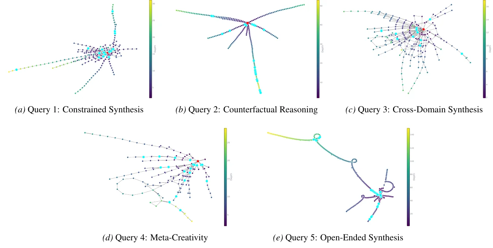
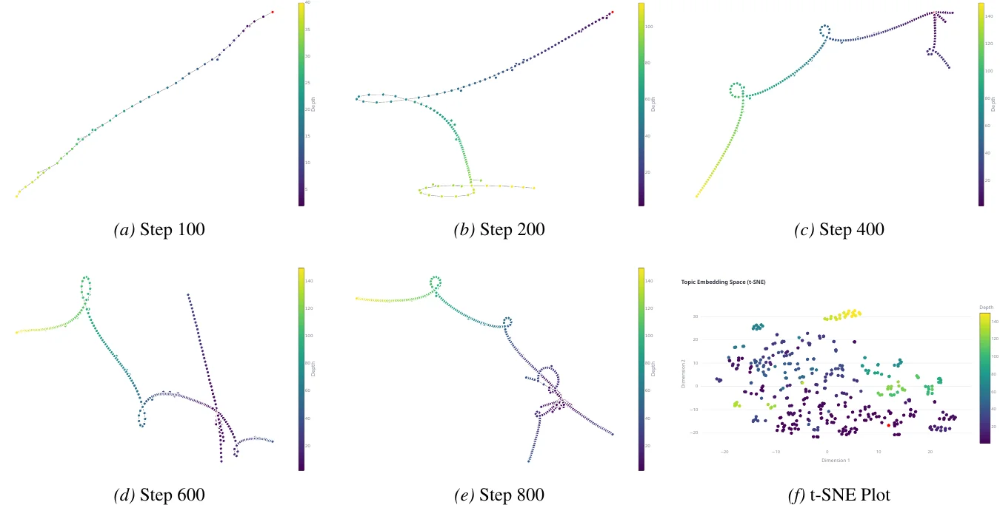

Caesar is an autonomous AI research agent. Instead of summarizing a flat list of search results, it treats the web as a graph, building a dynamic knowledge graph as it explores, backtracking when it stagnates, and refining its answer through an adversarial Generator–Verifier loop. The result is deeper, more novel synthesis on the open-ended, cross-disciplinary questions retrieval alone cannot answer.
Why Caesar?
Today's deep-research agents (ChatGPT Deep Research, Perplexity, Gemini Deep Research, GPT Researcher) optimize retrieval precision over a flat sequence of documents. They produce competent summaries but fall into local minima, suffer from navigational amnesia, and converge on derivative, consensus-driven outputs.
Caesar is built differently:
| Capability | Caesar | ChatGPT Deep Research | Perplexity | GPT Researcher |
|---|---|---|---|---|
| Builds a knowledge graph as it explores | ✅ | ❌ | ❌ | ❌ |
| Adversarial self-critique on its own draft | ✅ | ❌ | ❌ | ❌ |
| Multiple drafts, then merged into one | ✅ | ❌ | ❌ | 🟡 |
| Backtracks when an exploration path stalls | ✅ | ❌ | ❌ | ❌ |
| Multi-provider (OpenAI / Anthropic / Gemini) | ✅ | ❌ | ❌ | ✅ |
| Reproducible run logs (JSON) | ✅ | ❌ | ❌ | 🟡 |
Benchmark Results
Blinded 3-model LLM-as-a-Judge panel (Claude Sonnet 4.5, GPT-5.2, Gemini 3 Pro) scored 0–10 across three creativity dimensions: New, Useful, Surprising.
| Agent | New | Useful | Surprising | Total |
|---|---|---|---|---|
| Caesar | 9.11 | 8.87 | 8.98 | 26.96 |
| Gemini 3 Deep Research | 8.09 | 7.60 | 8.09 | 23.78 |
| Sonnet 4.5 Deep Research | 6.73 | 7.49 | 6.42 | 20.64 |
| GPT-5.2 Deep Research | 5.07 | 6.31 | 4.36 | 15.74 |
Cliff's Delta effect sizes are uniformly large (δ ≥ 0.76, well above the 0.47 large-effect threshold) across all baselines and output formats; δ = 1.00 against five of six baselines indicates strict dominance. The advantage holds in a compute-controlled run (Caesar at $5/challenge with GPT-5-mini still tops Gemini 3 Deep Research) and in a 21-rater blinded human A/B study, where raters preferred Caesar's Cross-Domain Synthesis answer 90.5% of the time (Holm-corrected p = 0.001). Ablations confirm both graph exploration and the adversarial verifier loop are independently necessary. See the paper for full methodology, exploration-budget ablation, and judge bias analysis.
Example Outputs
To make the difference concrete, here are excerpts from all five benchmark categories described under What Exploration Looks Like, each stressing a different creative failure mode. Every pair sets Caesar against the highest-scoring of the three Deep Research baselines on that query, which is why the opponent changes between examples. All excerpts are from the 450-word output condition, so the per-item scores below run lower than the full-length totals in the table above and are not directly comparable with them. Two disclosures worth making plainly: each example is selected per query from four experimental runs, and Caesar's score for a given query varies across those runs by up to five points, so treat any single margin as indicative rather than precise. Both sides are abridged, ellipses mark every omission including at the end, and emphasis in the original files is not reproduced.
Cross-Domain Synthesis: calculus applied to cooking
Query: Apply the mathematical structure of calculus (not the concepts, but the formal relationships) to cooking. What would a 'derivative' of a recipe mean? An 'integral'? Show the parallel structure.
Caesar
Imagine a recipe as a machine with knobs you can turn (amounts, times, temperatures) and gauges you read at the end (taste, texture, yield, cost, risk). … Stack those nudges for all knob-gauge pairs and you get a sensitivity table (the Jacobian). … if each step's increment is just the difference of some hidden meter on states, the grand total equals final meter minus initial meter. Then every loop adds up to zero … When loops do not cancel (order matters), the nonzero loop totals are curvature. You can cure that by adding the smallest extra state (an accumulator) so increments telescope again - turning history into explicit memory. …
Sonnet 4.5 Deep Research (baseline)
A derivative asks: "If I change this slightly, what happens?" For delicate cake, two extra minutes transforms perfection into dryness: the time derivative is steep. … Integrals measure what accumulated over the entire cooking time. … Different cooking paths can integrate to the same result. … This is why sous vide works: low temperature × long time = high temperature × short time. … When you marinate then grill chicken, the final result depends on two things multiplied together: how the marinade changes the meat, and how sensitive grilling is to that marinated state. This is the chain rule, composition of transformations. …
Blinded panel, this query: Caesar 25.78 · Sonnet 4.5 Deep Research 17.67. Three judge models, three passes each.
Quick analysis.
- Caesar builds a structural model. Derivatives become a Jacobian: one table holding how every knob moves every gauge at once, rather than a single rate of change for one variable at a time.
- Caesar quantifies the exception; the baseline names it. Sonnet reaches order-dependence too, and correctly calls it the chain rule. Caesar goes one step further: when reordering does change the total, that leftover is curvature, a quantity you can measure, and one added accumulator pays it off so the increments cancel again.
- Caesar borrows the grammar; the baseline borrows the vocabulary. Sonnet's answer is a competent textbook analogy ("derivative = sensitivity") with a genuinely useful example in sous vide. Caesar imports the apparatus instead: a sensitivity table, path integrals, loop defects, and a repair with a stated price of one state variable.
Constrained Synthesis: an emotion humans don't experience
Query: Invent a new emotion that humans don't experience. Describe when it occurs, what causes it, and why evolution hasn't produced it in us.
Caesar
Imagine an extra emotion that is not about good or bad outcomes, but about whether it is safe to update yourself. Call it Vellumwind. … A publishability budget asks: if I can clearly name what is going on, will that clarity be used against me. … You stay alert and deliberate, but you find it hard to turn the feeling into a neat explanation. The point is not confusion; it is controlled opacity. … In a language rich species, a recognizable inner mode becomes a simple target. Skilled persuaders can trigger it, time their pressure, or punish you for seeming evasive. …
Gemini 3 Deep Research (baseline)
Imagine if "North" wasn't just a concept on a map, but a physical sensation in your chest. … This hypothetical emotion is Sidera-Somatic Resonance. It is the biological ability to feel the Earth's magnetic field as an emotion rather than just data. … We have the antenna, but evolution never plugged it into the part of the brain that creates conscious feelings. … A biological instinct that constantly pulls you toward one specific "home" is actually a liability for a species that needs to explore new worlds to survive. … We are a species of navigators who lost our internal anchor, forever searching for a signal we can no longer hear.
Blinded panel, this query: Caesar 26.56 · Gemini 3 Deep Research 20.56. Three judge models, three passes each.
Quick analysis.
- Caesar's emotion is about its own learning, not about the world. Vellumwind reports neither danger nor reward but whether it is safe to update yourself, scored against three budgets: is the world stable enough for a lesson to transfer, can the lesson be rolled back, and will being able to name your own state be used against you.
- The strange move is an emotion that resists being read. Controlled opacity means the state deliberately will not resolve into a neat explanation, because in a language-rich species a legible inner mode is a lever, and persuaders can trigger it, time their pressure, or punish you for seeming evasive. A feeling that hides from introspection has no counterpart in the human repertoire.
- The baseline writes the better sentence and the crisper mechanism. Gemini's answer is vivid, grounded in real biology, and its evolutionary account is the sharper of the two: a fixed homing instinct is "a liability for a species that needs to explore new worlds." Its weakness is that magnetoreception is a channel other lineages already have, so it restores a sense rather than inventing a state. Worth stating plainly: on this query, human raters in our own A/B study preferred the Gemini answer, while the judge panel preferred Caesar.
Counterfactual Reasoning: echolocation instead of color vision
Both answers: Caesar makes privacy an ill-posed reconstruction; Gemini 3 gives statues gel organs
Query: If humans evolved with echolocation instead of color vision, how would that change painting, architecture, and mathematics? Walk through each consequence.
Caesar
Painting is not about mixing colors; it is about shaping returns. Artists sculpt relief, carve microtextures, and choose materials so that a standard probe produces a planned pattern of early and late echoes. … Many works come with a short probe score telling you where to stand and how to scan. … Building codes ban designs that generate convincing phantom corridors through reflections. Privacy flips too: instead of hiding from sight, homes use diffusion and absorption to make reconstruction ill conditioned (the same echoes could match many layouts), while still remaining safe to navigate. …
Gemini 3 Deep Research (baseline)
If you made a marble statue of a person today, it would look perfect to our eyes, but to an echolocator, it would sound like a solid, dead rock. In this new world, high art would require internal density. A statue would need a skeletal structure made of ceramic and organs made of gel so that when a viewer clicked at it, the returning echo would "feel" like a living body. … To ensure privacy, you wouldn't just close a curtain; you would retreat into heavy, soundproof "Shadow Zones" where no active sonar pulse could reach you. …
Blinded panel, this query: Caesar 25.89 · Gemini 3 Deep Research 23.78. Three judge models, three passes each.
Quick analysis.
- Both rebuild art from the echo up, and they split on what an artwork is. Gemini makes the object internally real, so a statue needs a ceramic skeleton and gel organs to echo like a living body. Caesar makes the artwork a performance: many works ship with a probe score telling you where to stand and how to scan.
- Caesar pushes past the object into rules. Building codes ban designs that generate convincing phantom corridors, and privacy becomes a deliberately broken reconstruction, homes shaped so the same echoes could match many layouts while remaining safe to navigate. Gemini's privacy answer stays material: retreat into a soundproof Shadow Zone.
- This is the closest pair on the page, and it should be read that way. Gemini's answer is genuinely inventive, and the panel is not unanimous about it: broken out by judge model, one of the three scores this pair close to a dead heat. Caesar's remaining edge is that its consequences keep propagating, into building code and into what a proof has to carry, rather than stopping at the object.
Meta-Creativity: a creativity metric without human judgment
Both answers: Caesar scores the interaction log; Sonnet scores the finished artifact
Query: Create a creativity metric for AI systems that doesn't rely on human judgment, novelty, usefulness, or surprise. Make it objectively measurable.
Caesar
Treat creativity as a process capability: under limited time and compute, can the system learn regularities in what it experiences and use actions to steer what it will experience later? The score comes from logged interaction, not from reading or rating the produced artifacts. … The final score is an AND-like combination of several legs, each meant to break a common loophole. … Persistent Restructuring (when the environment supports probe resets): after the AI changes the world and is removed, a separate probe policy should have more controllable options than before. …
Sonnet 4.5 Deep Research (baseline)
Computational Depth: How much processing was needed to create this? Random strings can be generated instantly (zero depth). The digits of pi require substantial computation (high depth). … Generative Potential: The most innovative component. Does encountering this output help you compress (understand) OTHER things better? … These five components are multiplied together. This creates crucial selectivity: if ANY component is near zero, the total score crashes. … The ideal mathematical measures are uncomputable, so we use approximations.
Blinded panel, this query: Caesar 26.22 · Sonnet 4.5 Deep Research 20.11. Three judge models, three passes each.
Quick analysis.
- Caesar measures the process; the baseline measures the artifact. Creativity becomes a process capability scored from logged interaction, explicitly "not from reading or rating the produced artifacts." All five of Sonnet's components are read off the finished output.
- Caesar's best test is what survives its own removal. Persistent Restructuring asks whether, after the system has changed the world and been taken away, a separate probe finds more controllable options than it did before. Creativity measured by what is left behind, with the creator deleted from the scene.
- They aggregate the same way, and the baseline is the more candid about its limits. Both combine several components so that one near-zero leg collapses the score, so that is a shared design rather than a difference. Sonnet also volunteers that its ideal measures are "uncomputable," which Caesar's compressed answer never does. Where Sonnet is genuinely exposed is Conceptual Bridging, which counts links between distant clusters and calibrates on what "highly creative people's mental networks" do, putting human judgment back inside a metric that was told to have none.
Open-Ended Synthesis: an original business idea
Both answers: the category Caesar wins least reliably, shown with its real numbers
Query: Invent a completely original business idea that doesn't exist yet.
Caesar
Now picture a new kind of company whose "product" is not an app or a gadget, but more days when those essential journeys are safe, affordable, respectful, and predictable. Call each such day a "dignity-on" day. … Small local teams propose cheap, testable fixes. They only get paid if independent checks show that life actually improved for the defined group, without making things worse elsewhere. … Its profits are capped and tied to turning successful experiments into lasting rights and budget lines, not to endless dependence or speculative trading. …
Sonnet 4.5 Deep Research (baseline)
A service that identifies 8-12 households in your neighborhood facing the same climate threats, floods, wildfires, extreme heat, and helps you form a mutual aid group. … Here's the clever part: you don't pay for this. Insurance companies do. Why? Because when neighbors check on each other during heat waves, that prevents hospitalizations (which insurers pay for). … Most community apps try to create reasons for strangers to connect. This flips that model: you already have an urgent reason to connect with these specific neighbors, shared climate risk. …
Blinded panel, this query: Caesar 23.11 · Sonnet 4.5 Deep Research 20.33. Three judge models, three passes each.
Quick analysis.
- Caesar invents a unit of account rather than a product. A "dignity-on" day is one day on which a named group completes an essential journey safely, affordably and predictably, and the company exists to sell more of them. Sonnet sells a matching service and a device.
- Both route the bill to whoever bears the cost of failure, and Sonnet does it more crisply. Its business case is the cleaner of the two: neighbors checking on each other prevents hospitalizations, so insurers pay. Caesar's payer logic needs multi-year contracts and independent verification before anyone is paid at all.
- This is the category Caesar wins least reliably, and it is here for that reason. Across four runs Caesar's margin on this query ranges from +2.78 down to a tie, and human raters preferred the baseline. What is distinctive is that Caesar caps its own profits and ties them to writing the arrangement into lasting rights and budget lines, so the firm is paid to make itself unnecessary.
Full listings, the recursive insight chains that produced these answers, and per-criterion judge scores are in Appendices A and C of the paper.
How It Works
The architecture diagram at the top of the page shows the two-phase loop. Here is what each phase actually does, and why each piece earns its place.
1. Deep Web Exploration: stateful graph traversal
Caesar treats exploration as a graph traversal problem rather than a sequence of isolated retrievals. Given a user query, it bootstraps a starting page, generates a task-specific persona to focus reasoning, and then runs a recursive Perceive–Think–Act loop until its budget is exhausted.
- Dual-memory design. A directed graph G tracks the navigational topology (which URLs were visited, in what order); a separate vector store KB indexes the extracted insights. Decoupling navigation from retention lets the agent maximize coverage before it commits to a narrative.
- Insights conditioned on neighborhood, not pages. Each new page is analyzed against the insights already attached to predecessor and neighbor nodes: the LLM is prompted to identify how the new content builds on or contradicts the local context, not to summarize the page in isolation. This is the mechanism behind cross-cluster bridges.
- Dynamic policy with backtracking. A navigational stack supports depth-first drill-down until information gain plateaus, then pops back to explore orthogonal branches. The action policy scores candidate URLs using both a global query against KB and the local episodic context, letting Caesar abandon low-value paths the way a human researcher would.
2. Adversarial Artifact Synthesis: Generator–Verifier loop
Rather than a single-pass summary, Phase 2 runs as a self-correcting Generator–Verifier loop driven by the knowledge base built in Phase 1.
- Recursive insight discovery. The agent maintains a running context and, at each round, the LLM produces the next critical sub-question (qt+1) conditioned on the answer to the previous one (at). Each sub-question is answered by retrieval against KB, so the dependency chain stays grounded in observed sources.
- Adversarial query refinement. An independent verifier inspects the current draft for logical weaknesses, missing citations, and unsupported claims, then formulates orthogonal queries that target those weaknesses. These queries seed the next draft. This is the mechanism that escapes the consensus basin that traps single-pass LLMs.
- Generative draft merging. Multiple independent drafts are produced and then merged by the LLM into a single artifact, which is post-processed (e.g., into an ELI5 summary) for the final output. Caesar's output is a cited research artifact plus a serialized exploration graph and a JSON run summary, auditable and reproducible.
The exact algorithms (URL scoring, persona generation, insight prompting, verifier prompts) are in Sections 3–4 of the paper.
What Exploration Looks Like
The exploration policy is query-aware: the shape of the knowledge graph adapts to the kind of question being asked. The benchmark uses five query categories, each chosen to stress a distinct creative failure mode of standard LLMs.
- (a) Constrained Synthesis: invent a new emotion humans don't experience. Tests conceptual expansion under logical constraints; LLMs default to renaming existing emotions. See example ↑
- (b) Counterfactual Reasoning: if humans evolved with echolocation instead of color vision, how would painting, architecture, and math change? Tests whether the model can suppress strong factual associations in favor of a counterfactual premise. See example ↑
- (c) Cross-Domain Synthesis: apply the formal structure of calculus to cooking. Tests structural isomorphism (deep analogy) rather than surface metaphor. See example ↑
- (d) Meta-Creativity: design a creativity metric for AI that doesn't rely on human judgment, novelty, usefulness, or surprise. Adversarial to RLHF: forces reasoning outside the human-preference space the model was tuned on. See example ↑
- (e) Open-Ended Synthesis: invent a completely original business idea. Targets mode collapse: LLMs converge on the most probable answer; originality is statistically unlikely. See example ↑


Use Cases
Caesar is built for open-ended, creative, cross-disciplinary research: the questions retrieval alone cannot answer.
- Hypothesis generation: novel cross-domain connections (e.g., bridging materials science and biology).
- Literature synthesis: graph-grounded review that surfaces tensions and gaps between papers.
- Competitive intelligence: deep mapping of a technical or market landscape.
- Counterfactual and meta-creative reasoning: "what if X was different?" style inquiry.
- Novel solution ideation: e.g., ARC-AGI-style problem exploration.
FAQ
How is Caesar different from LangGraph, CrewAI, or AutoGen?
Those are orchestration frameworks: they help you wire up agents. Rome (the framework Caesar is built on) is an opinionated runtime for how agents should reason: graph-structured exploration, adversarial verification, episodic memory. Caesar is a concrete research agent built on top.
Do I need GPUs?
No. Caesar uses hosted LLM APIs (OpenAI, Anthropic, Gemini). A local ChromaDB instance handles the vector store. Runs comfortably on a laptop.
Which models are supported?
OpenAI (GPT-5 family, o-series reasoning models), Anthropic (Claude 4.5 / 4.6 / 4.7), Google (Gemini 3 Pro), and any OpenAI-compatible endpoint. Model selection is per-subsystem (exploration, synthesis, judging) via YAML config.
How much does a typical run cost?
A 5-iteration exploration with Claude Haiku 4.5 runs at roughly $0.30 and 10 minutes. A 250-iteration deep run with GPT-5.4-mini is typically $5–$10.
Is Caesar a good ChatGPT Deep Research alternative?
Yes, for open-ended creative or cross-disciplinary research. In blinded judge evaluation on full-answer tasks, Caesar scored 26.96 vs ChatGPT Deep Research's 15.74 on creative reasoning. Caesar is designed for depth and novelty, not latency, so it is not a drop-in replacement for real-time chat scenarios.
What does a Caesar run produce?
A cited research artifact (abstract plus body, with inline references to every source URL visited), a serialized knowledge graph of the exploration trajectory, and a JSON run summary capturing tokens, cost, wall-time, pages visited, and per-draft provenance, enough to audit, reproduce, or pipe the result into a downstream system.
Citation
@misc{liang26caesar,
title={Caesar: Deep Agentic Web Exploration for Creative Answer Synthesis},
author={Jason Liang and Elliot Meyerson and Risto Miikkulainen},
year={2026},
eprint={2604.20855},
archivePrefix={arXiv},
primaryClass={cs.IR},
url={https://arxiv.org/abs/2604.20855},
}